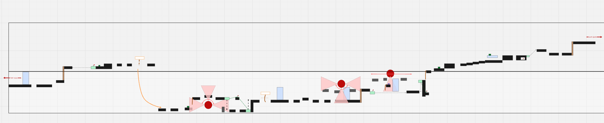
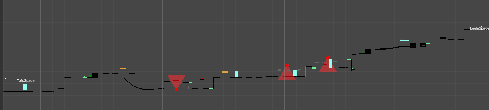

Don't Be Seen is a 2D adventure-puzzle platformer for PC. A child falls through a portal into a world between life and the afterlife, made of abandoned real-world objects, where trapped souls have built their own safe spaces (Ghost Spaces). Those spaces are linked by dangerous stretches (Voids) watched by the Red Eye (enemy), a beam of light that kills the child if it spots them. To get home, the child hides, uses the environment and helps those souls.
I joined Toasted Studio as a volunteer Level Designer and completed 9 tasks on the studio's task board: tutorial mechanics, blockouts and the Second Empty Void.
The game's pillars and how I work them through level design:
Goal: connect the spaces of two NPCs (Tofu and Leela) by teaching the Tuning Fork ability (a tuning fork that emits sound waves) and combining it with stealth against the Red Eye (enemy). Core rule: low frequency activates switches from a distance and through walls, high frequency shatters glass, and every use of the ability draws the Red Eye's gaze.
| Section | What the player lives |
|---|---|
| 1. Learn | Each frequency in isolation, without pressure and with an NPC as a guide. |
| 2. Apart | Hide from the Red Eye and use the ability at different moments. |
| 3. Combined | Use the ability without being seen: fire from behind a block or hide in a box. |
| 4. Breather | The Red Eye barely appears. It is the transition into the second NPC's space. |


Inside section 4 (Breather) I designed a short, optional exploration path. As part of the level's narrative, I proposed that this path be Tofu's former Ghost Space, an abandoned theatre backstage, which complements the character's story. The Narrative Lead approved the proposal.